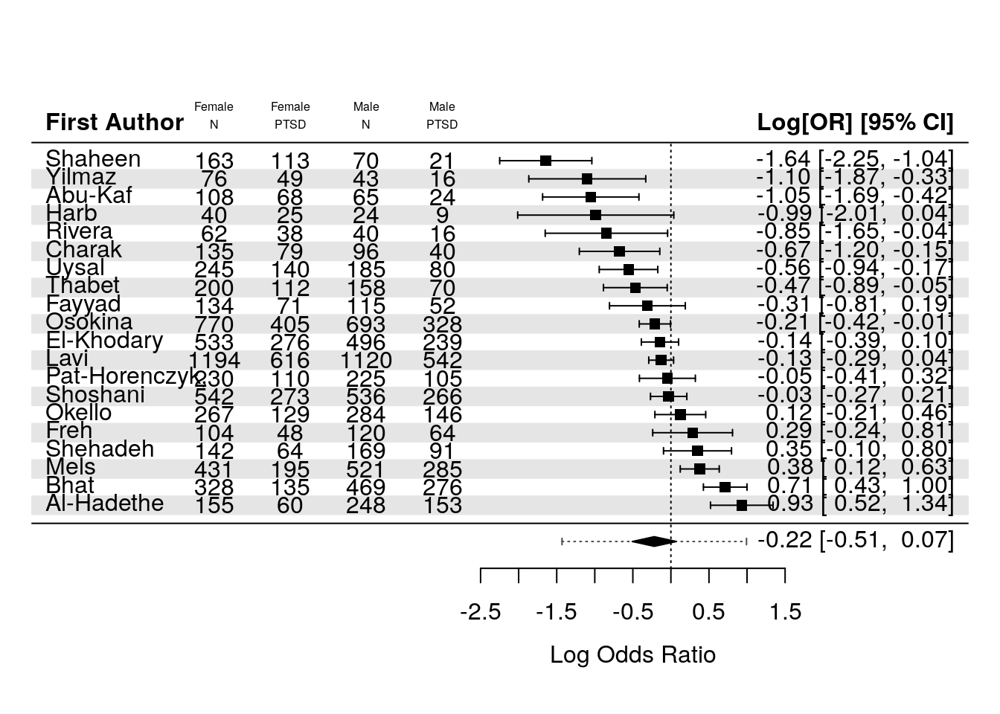

PTSD Meta-Analysis
Load Data and R Packages
R Packages we will use:
Load Data
Note that I’ve changed some of the raw data that is incorrect.
Note that for study 1, the number of men and women (115, 134) adds up 249, but the total is listed as 252, which is due to missing gender information for 3 individuals in the original source.
Presumably this the same issue with study 15 (Pat-Horenczyk).
Code
rm(list = ls())
df = haven::read_sav(file.path("data", "raw-data_11.03.24_final.sav")) %>%
rename_with(tolower) %>%
data.frame()
df %>%
rowid_to_column() %>%
knitr::kable()| rowid | participants | male | mpercent | female | fpercent | age | ptsd | mptsd | fptsd | war | aftermath | measure | country | econindex | authors | measures1 | qualityassessment | witnessingexplor | extrdander | witnessinghomedisruction | injury | deathofdearperson | deathofothers | harmfulevents | ownhomedesruction | risklevel | agemin | agemax | qualityl | qualitya |
|---|---|---|---|---|---|---|---|---|---|---|---|---|---|---|---|---|---|---|---|---|---|---|---|---|---|---|---|---|---|---|
| 1 | 252 | 115 | 45.60 | 134 | 53.20 | 14.70 | 35.50 | NA | NA | 1 | 9.00 | CRIES | Lebanon | 2 | Fayyad | 1 | 7 | 75.4 | 52.6 | 38.9 | 36.5 | 35.3 | 29.4 | 16.3 | 15.9 | 2 | 12 | 18 | 7 | 7 |
| 2 | 173 | NA | 37.50 | NA | 62.50 | 15.85 | 79.10 | 81.00 | 76.90 | 1 | 120.00 | CBCL | Syria | 1 | Abu-Kaf | 4 | 1 | NA | NA | NA | NA | NA | NA | NA | NA | 3 | 13 | 18 | 3 | 1 |
| 3 | 403 | NA | 61.50 | NA | 38.50 | 17.50 | 61.00 | 58.00 | 65.00 | 0 | NA | SPTSS | Iraq | 3 | Al-Hadethe | 5 | 4 | NA | NA | NA | NA | NA | NA | NA | NA | 3 | 16 | 19 | 4 | 4 |
| 4 | 797 | 469 | 58.80 | 328 | 41.20 | 19.90 | 49.81 | NA | NA | 0 | NA | PCL-5 | India | 2 | Bhat | 3 | 7 | 7.0 | 27.1 | NA | 0.0 | 16.1 | 26.1 | 5.3 | NA | 2 | 19 | 24 | 6 | 7 |
| 5 | 231 | NA | 41.60 | NA | 58.40 | 14.90 | 2.20 | NA | NA | 1 | 1.00 | CPSS | Burundi | 1 | Charak | 6 | 9 | NA | NA | NA | NA | NA | NA | NA | NA | 1 | 12 | 21 | 9 | 9 |
| 6 | 1029 | 496 | 48.20 | 533 | 51.80 | 13.71 | 53.50 | NA | NA | 0 | 12.00 | PTSDSS | Gaza Str | 4 | El-Khodary | 7 | 6 | 83.7 | NA | 88.3 | 88.4 | NA | NA | NA | NA | 2 | 11 | 17 | 7 | 6 |
| 7 | 224 | 120 | 53.60 | 104 | 46.40 | 15.80 | 55.80 | 64.51 | 48.00 | 1 | 120.00 | PTSDSS | Iraq | 3 | Freh | 7 | 7 | NA | NA | NA | 28.7 | 57.4 | NA | NA | 13.7 | 2 | 12 | 23 | 7 | 7 |
| 8 | 64 | NA | 37.00 | NA | 63.00 | 13.50 | 13.90 | 0.00 | 13.90 | 0 | NA | CRIES | Gaza Str | 4 | Harb | 1 | 3 | NA | NA | NA | NA | NA | NA | NA | NA | 3 | 12 | 16 | 3 | 3 |
| 9 | 1369 | NA | 52.80 | NA | NA | 16.38 | 53.00 | NA | NA | 1 | 108.00 | CRIES | Syria | 1 | Kakaje | 1 | 9 | NA | NA | NA | NA | NA | NA | NA | NA | 1 | 16 | 18 | 7 | 9 |
| 10 | 2314 | NA | 48.40 | NA | 51.60 | 13.50 | 15.00 | NA | NA | 1 | 10.00 | CPTS-RI | Israel | 4 | Lavi | 8 | 6 | NA | NA | NA | NA | NA | NA | NA | NA | 2 | 12 | 15 | 6 | 6 |
| 11 | 102 | NA | 39.22 | NA | 60.78 | 14.61 | 12.30 | NA | NA | 0 | NA | PCL-C | Colombia | 3 | Marroquin | 12 | 7 | NA | NA | NA | NA | NA | NA | NA | NA | 2 | 12 | 17 | 7 | 7 |
| 12 | 952 | NA | 54.70 | NA | 45.30 | 15.83 | 52.20 | NA | NA | 0 | NA | IES-R | Congo | 2 | Mels | 10 | 6 | NA | NA | NA | NA | NA | NA | NA | NA | 2 | 13 | 21 | 5 | 6 |
| 13 | 551 | 284 | 51.50 | 267 | 48.50 | 16.72 | 19.50 | 20.20 | 18.75 | 1 | 48.00 | IES-R | Uganda | 1 | Okello | 10 | 7 | NA | NA | NA | NA | NA | NA | NA | NA | 2 | 13 | 21 | 7 | 7 |
| 14 | 1463 | NA | 47.40 | NA | 52.60 | 13.00 | 5.30 | NA | NA | 0 | NA | HTQ | Ukraine | 2 | Osokina | 11 | 9 | 60.2 | NA | NA | 13.9 | NA | NA | NA | NA | 1 | 11 | 17 | 8 | 9 |
| 15 | 482 | NA | 46.70 | NA | 47.70 | 16.29 | 5.00 | NA | NA | 1 | 2.00 | UCLA-PTS | Israel | 4 | Pat-Horenczyk, | 2 | 3 | NA | NA | NA | NA | NA | NA | NA | NA | 3 | 12 | 18 | 3 | 3 |
| 16 | 233 | 70 | 30.04 | 163 | 69.60 | 13.49 | 40.00 | NA | NA | 0 | NA | UCLA-PTS | Israel | 4 | Shaheen | 2 | 3 | NA | NA | NA | NA | NA | NA | NA | NA | 3 | 11 | 16 | 5 | 3 |
| 17 | 1078 | 536 | 49.70 | 542 | 50.30 | 13.73 | 28.60 | NA | NA | 0 | NA | UCLA-PTS | Gaza Str | 4 | Shoshani | 2 | 7 | 7.1 | NA | NA | 16.1 | 6.5 | NA | NA | 1.0 | 2 | 13 | 15 | 7 | 7 |
| 18 | 358 | NA | 44.10 | NA | 55.90 | 16.70 | 29.80 | NA | NA | 1 | 3.00 | UCLA PTS | Gaza Str | 4 | Thabet | 2 | 4 | 88.5 | NA | NA | NA | NA | NA | NA | NA | 3 | 15 | 18 | 4 | 4 |
| 19 | 430 | NA | 43.00 | 245 | 57.00 | 15.50 | 61.20 | NA | NA | 1 | 57.00 | CRIES | Syria | 1 | Uysal | 1 | 9 | NA | NA | NA | NA | NA | NA | NA | NA | 1 | 12 | 18 | 9 | 9 |
| 20 | 119 | 43 | 36.10 | 76 | 63.90 | 13.50 | 6.70 | 4.70 | 7.90 | 1 | 46.32 | DSM-5 | Syria | 1 | Yilmaz | 9 | 3 | NA | NA | NA | NA | NA | NA | NA | NA | 3 | 12 | 16 | 3 | 3 |
| 21 | 314 | NA | 53.80 | NA | 45.20 | 13.37 | 46.20 | NA | NA | 0 | NA | UCLA-PTS | Israel | 4 | Shehadeh | 2 | 5 | NA | NA | NA | NA | NA | NA | NA | NA | 2 | 11 | 18 | 5 | 5 |
Compute Additional Variables
Add missing count data using the extracted percentages
Reformatted percentages so they’re from 0-1 and not 0-100
Created mean-centered age variable
Code
# df$male_plus_female_percent = df$mpercent + df$fpercent
df$mpercent = df$mpercent/100
df$fpercent = df$fpercent/100
df$ptsd = df$ptsd/100
df$aftermath = df$aftermath/12
df$male[is.na(df$male)] = round(df$participants[is.na(df$male)]*df$mpercent[is.na(df$male)] )
df$female[is.na(df$female)] = round(df$participants[is.na(df$female)]*df$fpercent[is.na(df$female)] )
df$ptsd_n = round(df$ptsd*df$participants)
df$authors[df$authors == "Marroquin"] = "Rivera"
df$war[df$authors == "El-Khodary"] = 1
table(df$aftermath, df$war, useNA = "always")
0 1 <NA>
0.0833333333333333 0 1 0
0.166666666666667 0 1 0
0.25 0 1 0
0.75 0 1 0
0.833333333333333 0 1 0
1 0 1 0
3.86 0 1 0
4 0 1 0
4.75 0 1 0
9 0 1 0
10 0 2 0
<NA> 9 0 0Code
df$measure[df$measure == "UCLA PTS"] = "UCLA-PTS"
df$measure_factor = factor(paste0("M",df$measures1))
df$qualityassessment_factor = factor(paste0("Quality Rating: ",df$qualityassessment))
df = df %>%
# filter(!exclude) %>%
select("authors","participants","ptsd_n",everything()) %>%
mutate(
age_centered = scale(age, center = TRUE, scale = FALSE),
aftermath_centered = scale(aftermath, center = TRUE, scale = FALSE),
quality_centered = scale(qualityassessment, center = TRUE, scale = TRUE)
)Cleaned Dataset
| rowid | authors | participants | ptsd_n | male | mpercent | female | fpercent | age | ptsd | mptsd | fptsd | war | aftermath | measure | country | econindex | measures1 | qualityassessment | witnessingexplor | extrdander | witnessinghomedisruction | injury | deathofdearperson | deathofothers | harmfulevents | ownhomedesruction | risklevel | agemin | agemax | qualityl | qualitya | measure_factor | qualityassessment_factor | age_centered | aftermath_centered | quality_centered |
|---|---|---|---|---|---|---|---|---|---|---|---|---|---|---|---|---|---|---|---|---|---|---|---|---|---|---|---|---|---|---|---|---|---|---|---|---|
| 1 | Fayyad | 252 | 89 | 115 | 0.4560 | 134 | 0.5320 | 14.70 | 0.3550 | NA | NA | 1 | 0.7500000 | CRIES | Lebanon | 2 | 1 | 7 | 75.4 | 52.6 | 38.9 | 36.5 | 35.3 | 29.4 | 16.3 | 15.9 | 2 | 12 | 18 | 7 | 7 | M1 | Quality Rating: 7 | -0.4657143 | -2.9744444 | 0.50478790 |
| 2 | Abu-Kaf | 173 | 137 | 65 | 0.3750 | 108 | 0.6250 | 15.85 | 0.7910 | 81.00 | 76.90 | 1 | 10.0000000 | CBCL | Syria | 1 | 4 | 1 | NA | NA | NA | NA | NA | NA | NA | NA | 3 | 13 | 18 | 3 | 1 | M4 | Quality Rating: 1 | 0.6842857 | 6.2755556 | -2.03934313 |
| 3 | Al-Hadethe | 403 | 246 | 248 | 0.6150 | 155 | 0.3850 | 17.50 | 0.6100 | 58.00 | 65.00 | 0 | NA | SPTSS | Iraq | 3 | 5 | 4 | NA | NA | NA | NA | NA | NA | NA | NA | 3 | 16 | 19 | 4 | 4 | M5 | Quality Rating: 4 | 2.3342857 | NA | -0.76727761 |
| 4 | Bhat | 797 | 397 | 469 | 0.5880 | 328 | 0.4120 | 19.90 | 0.4981 | NA | NA | 0 | NA | PCL-5 | India | 2 | 3 | 7 | 7.0 | 27.1 | NA | 0.0 | 16.1 | 26.1 | 5.3 | NA | 2 | 19 | 24 | 6 | 7 | M3 | Quality Rating: 7 | 4.7342857 | NA | 0.50478790 |
| 5 | Charak | 231 | 5 | 96 | 0.4160 | 135 | 0.5840 | 14.90 | 0.0220 | NA | NA | 1 | 0.0833333 | CPSS | Burundi | 1 | 6 | 9 | NA | NA | NA | NA | NA | NA | NA | NA | 1 | 12 | 21 | 9 | 9 | M6 | Quality Rating: 9 | -0.2657143 | -3.6411111 | 1.35283158 |
| 6 | El-Khodary | 1029 | 551 | 496 | 0.4820 | 533 | 0.5180 | 13.71 | 0.5350 | NA | NA | 1 | 1.0000000 | PTSDSS | Gaza Str | 4 | 7 | 6 | 83.7 | NA | 88.3 | 88.4 | NA | NA | NA | NA | 2 | 11 | 17 | 7 | 6 | M7 | Quality Rating: 6 | -1.4557143 | -2.7244444 | 0.08076606 |
| 7 | Freh | 224 | 125 | 120 | 0.5360 | 104 | 0.4640 | 15.80 | 0.5580 | 64.51 | 48.00 | 1 | 10.0000000 | PTSDSS | Iraq | 3 | 7 | 7 | NA | NA | NA | 28.7 | 57.4 | NA | NA | 13.7 | 2 | 12 | 23 | 7 | 7 | M7 | Quality Rating: 7 | 0.6342857 | 6.2755556 | 0.50478790 |
| 8 | Harb | 64 | 9 | 24 | 0.3700 | 40 | 0.6300 | 13.50 | 0.1390 | 0.00 | 13.90 | 0 | NA | CRIES | Gaza Str | 4 | 1 | 3 | NA | NA | NA | NA | NA | NA | NA | NA | 3 | 12 | 16 | 3 | 3 | M1 | Quality Rating: 3 | -1.6657143 | NA | -1.19129945 |
| 9 | Kakaje | 1369 | 726 | 723 | 0.5280 | NA | NA | 16.38 | 0.5300 | NA | NA | 1 | 9.0000000 | CRIES | Syria | 1 | 1 | 9 | NA | NA | NA | NA | NA | NA | NA | NA | 1 | 16 | 18 | 7 | 9 | M1 | Quality Rating: 9 | 1.2142857 | 5.2755556 | 1.35283158 |
| 10 | Lavi | 2314 | 347 | 1120 | 0.4840 | 1194 | 0.5160 | 13.50 | 0.1500 | NA | NA | 1 | 0.8333333 | CPTS-RI | Israel | 4 | 8 | 6 | NA | NA | NA | NA | NA | NA | NA | NA | 2 | 12 | 15 | 6 | 6 | M8 | Quality Rating: 6 | -1.6657143 | -2.8911111 | 0.08076606 |
| 11 | Rivera | 102 | 13 | 40 | 0.3922 | 62 | 0.6078 | 14.61 | 0.1230 | NA | NA | 0 | NA | PCL-C | Colombia | 3 | 12 | 7 | NA | NA | NA | NA | NA | NA | NA | NA | 2 | 12 | 17 | 7 | 7 | M12 | Quality Rating: 7 | -0.5557143 | NA | 0.50478790 |
| 12 | Mels | 952 | 497 | 521 | 0.5470 | 431 | 0.4530 | 15.83 | 0.5220 | NA | NA | 0 | NA | IES-R | Congo | 2 | 10 | 6 | NA | NA | NA | NA | NA | NA | NA | NA | 2 | 13 | 21 | 5 | 6 | M10 | Quality Rating: 6 | 0.6642857 | NA | 0.08076606 |
| 13 | Okello | 551 | 107 | 284 | 0.5150 | 267 | 0.4850 | 16.72 | 0.1950 | 20.20 | 18.75 | 1 | 4.0000000 | IES-R | Uganda | 1 | 10 | 7 | NA | NA | NA | NA | NA | NA | NA | NA | 2 | 13 | 21 | 7 | 7 | M10 | Quality Rating: 7 | 1.5542857 | 0.2755556 | 0.50478790 |
| 14 | Osokina | 1463 | 78 | 693 | 0.4740 | 770 | 0.5260 | 13.00 | 0.0530 | NA | NA | 0 | NA | HTQ | Ukraine | 2 | 11 | 9 | 60.2 | NA | NA | 13.9 | NA | NA | NA | NA | 1 | 11 | 17 | 8 | 9 | M11 | Quality Rating: 9 | -2.1657143 | NA | 1.35283158 |
| 15 | Pat-Horenczyk, | 482 | 24 | 225 | 0.4670 | 230 | 0.4770 | 16.29 | 0.0500 | NA | NA | 1 | 0.1666667 | UCLA-PTS | Israel | 4 | 2 | 3 | NA | NA | NA | NA | NA | NA | NA | NA | 3 | 12 | 18 | 3 | 3 | M2 | Quality Rating: 3 | 1.1242857 | -3.5577778 | -1.19129945 |
| 16 | Shaheen | 233 | 93 | 70 | 0.3004 | 163 | 0.6960 | 13.49 | 0.4000 | NA | NA | 0 | NA | UCLA-PTS | Israel | 4 | 2 | 3 | NA | NA | NA | NA | NA | NA | NA | NA | 3 | 11 | 16 | 5 | 3 | M2 | Quality Rating: 3 | -1.6757143 | NA | -1.19129945 |
| 17 | Shoshani | 1078 | 308 | 536 | 0.4970 | 542 | 0.5030 | 13.73 | 0.2860 | NA | NA | 0 | NA | UCLA-PTS | Gaza Str | 4 | 2 | 7 | 7.1 | NA | NA | 16.1 | 6.5 | NA | NA | 1.0 | 2 | 13 | 15 | 7 | 7 | M2 | Quality Rating: 7 | -1.4357143 | NA | 0.50478790 |
| 18 | Thabet | 358 | 107 | 158 | 0.4410 | 200 | 0.5590 | 16.70 | 0.2980 | NA | NA | 1 | 0.2500000 | UCLA-PTS | Gaza Str | 4 | 2 | 4 | 88.5 | NA | NA | NA | NA | NA | NA | NA | 3 | 15 | 18 | 4 | 4 | M2 | Quality Rating: 4 | 1.5342857 | -3.4744444 | -0.76727761 |
| 19 | Uysal | 430 | 263 | 185 | 0.4300 | 245 | 0.5700 | 15.50 | 0.6120 | NA | NA | 1 | 4.7500000 | CRIES | Syria | 1 | 1 | 9 | NA | NA | NA | NA | NA | NA | NA | NA | 1 | 12 | 18 | 9 | 9 | M1 | Quality Rating: 9 | 0.3342857 | 1.0255556 | 1.35283158 |
| 20 | Yilmaz | 119 | 8 | 43 | 0.3610 | 76 | 0.6390 | 13.50 | 0.0670 | 4.70 | 7.90 | 1 | 3.8600000 | DSM-5 | Syria | 1 | 9 | 3 | NA | NA | NA | NA | NA | NA | NA | NA | 3 | 12 | 16 | 3 | 3 | M9 | Quality Rating: 3 | -1.6657143 | 0.1355556 | -1.19129945 |
| 21 | Shehadeh | 314 | 145 | 169 | 0.5380 | 142 | 0.4520 | 13.37 | 0.4620 | NA | NA | 0 | NA | UCLA-PTS | Israel | 4 | 2 | 5 | NA | NA | NA | NA | NA | NA | NA | NA | 2 | 11 | 18 | 5 | 5 | M2 | Quality Rating: 5 | -1.7957143 | NA | -0.34325578 |
Calculate Effect Sizes
R1) Overall Prevalance (No moderations)
Code
Random-Effects Model (k = 21; tau^2 estimator: ML)
logLik deviance AIC BIC AICc
-62.9667 0.7384 129.9333 132.0224 130.6000
tau^2 (estimated amount of total heterogeneity): 1.7093
tau (square root of estimated tau^2 value): 1.3074
I^2 (total heterogeneity / total variability): 99.45%
H^2 (total variability / sampling variability): 181.78
Tests for Heterogeneity:
Wld(df = 20) = 1929.6643, p-val < .0001
LRT(df = 20) = 2747.3181, p-val < .0001
Model Results:
estimate se tval df pval ci.lb ci.ub
-0.9045 0.2882 -3.1387 20 0.0052 -1.5057 -0.3034 **
---
Signif. codes: 0 '***' 0.001 '**' 0.01 '*' 0.05 '.' 0.1 ' ' 1Prediction intervals on logit scale
These results are not helpful as they’re on the logit scale, so we need to transform using the logit function below!
Code
predict(results_glmm,
level = .95
)
pred se ci.lb ci.ub pi.lb pi.ub
-0.9045 0.2882 -1.5057 -0.3034 -3.6972 1.8881 Prediction intervals on percentage scale
These results show that the AVERAGE prevalence is 26% 95%CI [.17, 37]
However the prediction intervals are very wide 95% CI [.02, .84].
Code
predict(results_glmm,
level = .95,
transf=transf.ilogit)
pred ci.lb ci.ub pi.lb pi.ub
0.2881 0.1816 0.4247 0.0242 0.8685 Forest Plot
Code
forest(
results_glmm,
transf = transf.ilogit,
slab = authors,
addpred = TRUE,
header = TRUE,
steps = 10,
order = "obs"
) R2) Within-Study Comparison of Men and Women
Prepare Dataset
Code
# df_gender = df %>%
# metafor::escalc(
# data = .,
# ai = `male_ptsd`,
# n1i = `male_n`,
# ci = `female_ptsd`,
# n2i = `female_n`,
# measure = "PLO"
# )
df_gender = df %>%
filter(!is.na(male) & !is.na(female)) %>%
mutate(
male_n = male,
male_ptsd = round(male*mpercent),
female_n = female,
female_ptsd = round(female*fpercent)
) %>%
select(authors, male_n, male_ptsd, female_n, female_ptsd)
df_gender = df_gender %>%
metafor::escalc(
data = .,
ai = `male_ptsd`,
n1i = `male_n`,
ci = `female_ptsd`,
n2i = `female_n`,
measure = "OR",
var.names = c("log.odds", "log.odds.se")
)
df_gender %>%
knitr::kable()| authors | male_n | male_ptsd | female_n | female_ptsd | log.odds | log.odds.se |
|---|---|---|---|---|---|---|
| Fayyad | 115 | 52 | 134 | 71 | -0.3114362 | 0.0650613 |
| Abu-Kaf | 65 | 24 | 108 | 68 | -1.0661465 | 0.1057628 |
| Al-Hadethe | 248 | 153 | 155 | 60 | 0.9360934 | 0.0442552 |
| Bhat | 469 | 276 | 328 | 135 | 0.7151261 | 0.0213933 |
| Charak | 96 | 40 | 135 | 79 | -0.6805684 | 0.0733725 |
| El-Khodary | 496 | 239 | 533 | 276 | -0.1439373 | 0.0155894 |
| Freh | 120 | 64 | 104 | 48 | 0.2876821 | 0.0721726 |
| Harb | 24 | 9 | 40 | 25 | -1.0216512 | 0.2844444 |
| Lavi | 1120 | 542 | 1194 | 616 | -0.1279810 | 0.0069286 |
| Rivera | 40 | 16 | 62 | 38 | -0.8649974 | 0.1721491 |
| Mels | 521 | 285 | 431 | 195 | 0.3794896 | 0.0171116 |
| Okello | 284 | 146 | 267 | 129 | 0.1237942 | 0.0290940 |
| Osokina | 693 | 328 | 770 | 405 | -0.2108735 | 0.0109974 |
| Pat-Horenczyk, | 225 | 105 | 230 | 110 | -0.0465200 | 0.0352814 |
| Shaheen | 70 | 21 | 163 | 113 | -1.6626627 | 0.0968768 |
| Shoshani | 536 | 266 | 542 | 273 | -0.0296861 | 0.0148436 |
| Thabet | 158 | 70 | 200 | 112 | -0.4700036 | 0.0459416 |
| Uysal | 185 | 80 | 245 | 140 | -0.5596158 | 0.0386905 |
| Yilmaz | 43 | 16 | 76 | 49 | -1.1192316 | 0.1569822 |
| Shehadeh | 169 | 91 | 142 | 64 | 0.3519764 | 0.0522550 |
Meta-Analysis
Code
results_glmm = rma.glmm(
ai = `male_ptsd`,
n1i = `male_n`,
ci = `female_ptsd`,
n2i = `female_n`,
data = df_gender,
measure="OR",
model = "CM.EL",
verbose = FALSE,
# method = "ML",
# intercept = FALSE,
# mods = ~ 0 + gender_male + gender_female,
to = "all",
test = "t" # This is recommended here metafor/html/misc-recs.html
# nAGQ = 1
)
summary(results_glmm)
Random-Effects Model (k = 20; tau^2 estimator: ML)
Model Type: Conditional Model with Exact Likelihood
logLik deviance AIC BIC AICc
-81.7165 64.0692 167.4330 169.4244 168.1389
tau^2 (estimated amount of total heterogeneity): 0.3162 (SE = 0.1239)
tau (square root of estimated tau^2 value): 0.5623
I^2 (total heterogeneity / total variability): 91.37%
H^2 (total variability / sampling variability): 11.59
Tests for Heterogeneity:
Wld(df = 19) = 136.9453, p-val < .0001
LRT(df = 19) = 141.7599, p-val < .0001
Model Results:
estimate se tval df pval ci.lb ci.ub
-0.2186 0.1377 -1.5875 19 0.1289 -0.5068 0.0696
---
Signif. codes: 0 '***' 0.001 '**' 0.01 '*' 0.05 '.' 0.1 ' ' 1Code
predict(results_glmm, transf=exp, digits=3)
pred ci.lb ci.ub pi.lb pi.ub
0.804 0.602 1.072 0.239 2.700 Forest Plot
Code
pdf(file.path("plots","gender_forest.pdf"), width = 10, height = 7.7) # Adjust the size as needed
res = results_glmm
# forestplot =
forest(
results_glmm,
# transf = transf.ilogit,
slab = authors,
addpred = TRUE,
steps = 10,
order = "obs",
ilab = cbind(female_n, female_ptsd, male_n, male_ptsd),
header="First Author",
ilab.xpos=(-9:-6)+3,
mlab="",
shade = TRUE
)
text((-9:-6)+3, results_glmm$k+3, c("Female", "Female", "Male", "Male"))
text((-9:-6)+3, results_glmm$k+2, c("N", "PTSD"))
text(-6.3, -0.25, pos=1, cex=1, bquote(paste(
"RE Model (K = ", .(fmtx(res$k, digits=0)),
", df = ", .(res$k - res$p), ", ",
.(fmtp(res$QEp, digits=3, pname="p", add0=TRUE, sep=TRUE, equal=TRUE)), "; ",
I^2, " = ", .(fmtx(res$I2, digits=1)), "%)")))
dev.off()png
2 Code
forest(
results_glmm,
# transf = transf.ilogit,
slab = authors,
addpred = TRUE,
steps = 10,
order = "obs",
ilab = cbind(female_n, female_ptsd, male_n, male_ptsd),
header="First Author",
ilab.xpos=(-9:-6)+3,
mlab="",
shade = TRUE
)
text((-9:-6)+3, cex = .5,results_glmm$k+3, c("Female", "Female", "Male", "Male"))
text((-9:-6)+3, cex = .5, results_glmm$k+2, c("N", "PTSD"))
The above effect is negative, which here indicates that PTSD rates are slightly here in women across the studies, but the effect is not significant.
R3) Meta-Regressions - age, ongoing war, method of measurement, country income level (IN PROGRESS)
Code
#| echo: true
#| output: false
#| warning: false
#|
moderation_models = list()
moderation_models[["Age"]] = rma.glmm(
xi = `ptsd_n`,
ni = `participants`,
data = df,
measure="PLO",
verbose = FALSE,
method = "ML",
# intercept = FALSE,
mods = ~ 1 + age_centered,
to = "all",
test = "t" # This is recommended here metafor/html/misc-recs.html
)
moderation_models[["War"]] = rma.glmm(
xi = `ptsd_n`,
ni = `participants`,
data = df,
measure="PLO",
verbose = FALSE,
method = "ML",
# intercept = FALSE,
mods = ~ 1 + war,
to = "all",
test = "t" # This is recommended here metafor/html/misc-recs.html
)
moderation_models[["Aftermath"]] = rma.glmm(
xi = `ptsd_n`,
ni = `participants`,
data = df,
measure="PLO",
verbose = FALSE,
method = "ML",
# intercept = FALSE,
mods = ~ 1 + aftermath_centered,
to = "all",
test = "t" # This is recommended here metafor/html/misc-recs.html
)Warning: 9 studies with NAs omitted from model fitting.Warning: Some yi/vi values are NA.Code
moderation_models[["Measure"]] = rma.glmm(
xi = `ptsd_n`,
ni = `participants`,
data = df,
measure="PLO",
verbose = FALSE,
method = "ML",
# intercept = FALSE,
mods = ~ 1 + measure,
to = "all",
test = "t" # This is recommended here metafor/html/misc-recs.html
)
moderation_models[["Economic"]] = rma.glmm(
xi = `ptsd_n`,
ni = `participants`,
data = df,
measure="PLO",
verbose = FALSE,
method = "ML",
# intercept = FALSE,
mods = ~ 1 + factor(econindex),
to = "all",
test = "t" # This is recommended here metafor/html/misc-recs.html
)
moderation_models[["Quality"]] = rma.glmm(
xi = `ptsd_n`,
ni = `participants`,
data = df,
measure="PLO",
verbose = FALSE,
method = "ML",
# intercept = FALSE,
mods = ~ 1 + qualityassessment_factor,
to = "all",
test = "t" # This is recommended here metafor/html/misc-recs.html
)
moderation_models_nointercept = list()
moderation_models_nointercept[["Age"]] = rma.glmm(
xi = `ptsd_n`,
ni = `participants`,
data = df,
measure="PLO",
verbose = FALSE,
method = "ML",
# intercept = FALSE,
mods = ~ 1 + age_centered,
to = "all",
test = "t" # This is recommended here metafor/html/misc-recs.html
)
moderation_models_nointercept[["War"]] = rma.glmm(
xi = `ptsd_n`,
ni = `participants`,
data = df,
measure="PLO",
verbose = FALSE,
method = "ML",
# intercept = FALSE,
mods = ~ 0 + factor(war),
to = "all",
test = "t" # This is recommended here metafor/html/misc-recs.html
)
moderation_models_nointercept[["Aftermath"]] = rma.glmm(
xi = `ptsd_n`,
ni = `participants`,
data = df,
measure="PLO",
verbose = FALSE,
method = "ML",
# intercept = FALSE,
mods = ~ 1 + aftermath_centered,
to = "all",
test = "t" # This is recommended here metafor/html/misc-recs.html
)Warning: 9 studies with NAs omitted from model fitting.
Warning: Some yi/vi values are NA.Code
moderation_models_nointercept[["Measure"]] = rma.glmm(
xi = `ptsd_n`,
ni = `participants`,
data = df,
measure="PLO",
verbose = FALSE,
method = "ML",
# intercept = FALSE,
mods = ~ 0 + measure,
to = "all",
test = "t" # This is recommended here metafor/html/misc-recs.html
)
moderation_models_nointercept[["Economic"]] = rma.glmm(
xi = `ptsd_n`,
ni = `participants`,
data = df,
measure="PLO",
verbose = FALSE,
method = "ML",
# intercept = FALSE,
mods = ~ 0 + factor(econindex),
to = "all",
test = "t" # This is recommended here metafor/html/misc-recs.html
)
moderation_models_nointercept[["Quality"]] = rma.glmm(
xi = `ptsd_n`,
ni = `participants`,
data = df,
measure="PLO",
verbose = FALSE,
method = "ML",
# intercept = FALSE,
mods = ~ 0 + qualityassessment_factor,
to = "all",
test = "t" # This is recommended here metafor/html/misc-recs.html
)Create Table
Code
# moderation_models[[2]]
moderation_results = list()
for (i in 1:length(moderation_models)){
moderation_results[[i]] = list()
moderation_results[[i]][["QM"]] = moderation_models[[i]]$QM
moderation_results[[i]][["QMdf_1"]] = moderation_models[[i]]$QMdf[1]
moderation_results[[i]][["QMdf_2"]] = moderation_models[[i]]$QMdf[2]
moderation_results[[i]][["QMp"]] = moderation_models[[i]]$QMp
moderation_results[[i]][["N Studies"]] = length(moderation_models[[i]]$ni)
moderation_results[[i]][["N Participants"]] = sum(moderation_models[[i]]$ni)
}
moderation_df <- do.call(rbind, lapply(moderation_results, function(x) as.data.frame(t(unlist(x)))))
rownames(moderation_df) = names(moderation_models)
moderation_df %>%
gt(rowname_col = "Moderation Test",
rownames_to_stub = TRUE) %>%
gt::tab_header(title = "Moderation Tests") %>%
fmt_number(columns = c(QM,QMp), decimals = 3)| Moderation Tests | ||||||
|---|---|---|---|---|---|---|
| QM | QMdf_1 | QMdf_2 | QMp | N Studies | N Participants | |
| Age | 2.950 | 1 | 19 | 0.102 | 21 | 12938 |
| War | 0.043 | 1 | 19 | 0.838 | 21 | 12938 |
| Aftermath | 8.749 | 1 | 10 | 0.014 | 12 | 7532 |
| Measure | 5.644 | 11 | 9 | 0.007 | 21 | 12938 |
| Economic | 0.205 | 3 | 17 | 0.892 | 21 | 12938 |
| Quality | 1.874 | 6 | 14 | 0.156 | 21 | 12938 |
Code
moderation_coef = list()
for (i in 1:length(moderation_models_nointercept)){
moderation_coef[[i]] = list()
moderation_coef[[i]][["QM"]] = moderation_models_nointercept[[i]]
moderation_coef[[i]] = data.frame(
model = names(moderation_models_nointercept)[i],
group = rownames(moderation_models_nointercept[[i]]$beta),
b = moderation_models_nointercept[[i]][c("b")],
ci.lb = moderation_models_nointercept[[i]][c("ci.lb")],
ci.ub = moderation_models_nointercept[[i]][c("ci.ub")],
se = moderation_models_nointercept[[i]][c("se")],
p = moderation_models_nointercept[[i]][c("pval")]
)
# moderation_coef[[i]] = moderation_coef[[i]] %>%
# mutate(across(c(b, ci.lb, ci.ub), ~plogis(.x)))
}
moderation_coef[[match("War", names(moderation_models))]]$group = c("Ongoing War","Aftermath")
moderation_coef %>%
do.call("bind_rows",.) %>%
`rownames<-`((NULL)) %>%
select(-pval) %>%
select(-se) %>%
mutate(group = gsub("measure","", group)) %>%
mutate(group = gsub("factor\\(econindex\\)","", group)) %>%
mutate(group = gsub("qualityassessment_factor","", group)) %>%
mutate(group = gsub("intrcpt","Intercept", group)) %>%
gt() %>%
cols_hide("model") %>%
tab_row_group(
label = "Ongoing / Aftermath War, F(df1 = 1, df2 = 19) = .43, p = .84",
rows = which(model=="War")
) %>%
tab_row_group(
label = "Mean Sample Age, F(df1 = 1, df2 = 19) = 2.95, p = .10",
rows = which(model=="Age")
) %>%
tab_row_group(
label = "PTSD Measure, F(df1 = 11, df2 = 9) = 5.64, p = .007",
rows = which(model=="Measure")
) %>%
tab_row_group(
label = "Economic Index, F(df1 = 3, df2 = 17) = 0.21, p = .89",
rows = which(model=="Economic")
) %>%
tab_row_group(
label = "Aftermath Length, F(df1 = 1, df2 = 10) = 8.75, p = .014",
rows = which(model=="Aftermath")
) %>%
tab_row_group(
label = "Quality Assessment, F(df1 = 6, df2 = 14) = 1.87, p = .16",
rows = which(model=="Quality")
) %>%
fmt_percent(
rows = (model != "Age") & (model != "Aftermath"),
columns = everything(),
decimals = 1,
use_seps = FALSE
) %>%
fmt(
rows = (model != "Age") | (model != "Aftermath"),
columns = c(b, ci.lb, ci.ub),
fns = function(x) {paste0(signif((plogis(x)*100),3),"%")}
) %>%
fmt(
rows = (model == "Age") | (model == "Aftermath"),
columns = c(b, ci.lb, ci.ub),
fns = function(x) {paste0("b = ", gbtoolbox::apa_num(as.numeric(x)))}
)| group | b | ci.lb | ci.ub |
|---|---|---|---|
| Quality Assessment, F(df1 = 6, df2 = 14) = 1.87, p = .16 | |||
| Quality Rating: 1 | 79.4% | 28.1% | 97.4% |
| Quality Rating: 3 | 12.4% | 4.22% | 31.2% |
| Quality Rating: 4 | 45% | 14.2% | 80.2% |
| Quality Rating: 5 | 46.2% | 8.19% | 89.2% |
| Quality Rating: 6 | 37.7% | 14.1% | 69% |
| Quality Rating: 7 | 31.7% | 15.5% | 54% |
| Quality Rating: 9 | 18.8% | 6.84% | 42.2% |
| Aftermath Length, F(df1 = 1, df2 = 10) = 8.75, p = .014 | |||
| Intercept | b = -.95 | b = -1.68 | b = -.23 |
| aftermath_centered | b = .25 | b = .06 | b = .45 |
| Economic Index, F(df1 = 3, df2 = 17) = 0.21, p = .89 | |||
| 1 | 27.9% | 11.1% | 54.4% |
| 2 | 29.9% | 9.86% | 62.5% |
| 3 | 40.1% | 12.1% | 76.6% |
| 4 | 25.3% | 11.4% | 47.1% |
| PTSD Measure, F(df1 = 11, df2 = 9) = 5.64, p = .007 | |||
| CBCL | 79.3% | 46.9% | 94.3% |
| CPSS | 2.03% | 0.359% | 10.7% |
| CPTS-RI | 15% | 4.12% | 42% |
| CRIES | 40.4% | 24.6% | 58.5% |
| DSM-5 | 6.46% | 1.32% | 26.2% |
| HTQ | 5.3% | 1.32% | 19% |
| IES-R | 34% | 15.9% | 58.5% |
| PCL-5 | 49.8% | 19.4% | 80.3% |
| PCL-C | 12.4% | 2.9% | 40.4% |
| PTSDSS | 54.7% | 30.6% | 76.8% |
| SPTSS | 61.1% | 27.4% | 86.7% |
| UCLA-PTS | 26.2% | 15.7% | 40.3% |
| Mean Sample Age, F(df1 = 1, df2 = 19) = 2.95, p = .10 | |||
| Intercept | b = -.91 | b = -1.47 | b = -.34 |
| age_centered | b = .27 | b = -.06 | b = .60 |
| Ongoing / Aftermath War, F(df1 = 1, df2 = 19) = .43, p = .84 | |||
| Ongoing War | 30.2% | 14.7% | 52.1% |
| Aftermath | 27.8% | 14.8% | 46% |
Additional Plots
Age
Code
df %>%
arrange((prev_plo_var))%>%
mutate(war_factor = factor(war, levels = 0:1, labels = c("On Going", "Aftermath")),
war_factor = forcats::fct_explicit_na(war_factor, na_level = "Missing")) %>%
ggplot(aes(y = prev_pr, x = age)) +
geom_point(aes(size = 1/prev_plo_var, shape = war_factor,col = war_factor)) +
labs(x = "Mean Sample Age (Years)", y = "PTSD Prevalence",
col = "War", shape = "War") +
ggrepel::geom_text_repel(aes(label = authors), size = 3) +
guides(size = "none") Warning: There was 1 warning in `mutate()`.
ℹ In argument: `war_factor = forcats::fct_explicit_na(war_factor, na_level =
"Missing")`.
Caused by warning:
! `fct_explicit_na()` was deprecated in forcats 1.0.0.
ℹ Please use `fct_na_value_to_level()` instead.
Code
table(df$war)
0 1
9 12 Aftermath
Code
intercept = moderation_models$Aftermath$b[1,1]
slope = moderation_models$Aftermath$b[2,1]
df %>%
arrange((prev_plo_var))%>%
filter(!is.na(aftermath)) %>%
mutate(war_factor = factor(war, levels = 0:1, labels = c("On Going", "Aftermath")),
war_factor = forcats::fct_explicit_na(war_factor, na_level = "Missing")) %>%
ggplot(aes(
y = prev_pr,
x = aftermath,
col = authors
)) +
geom_point(
aes(
size = 1/prev_plo_var
)) +
labs(
x = "Aftermath Length (Years)",
y = "PTSD Prevalence",
col = "War",
shape = "War"
) +
ggrepel::geom_text_repel(
seed = 10,
aes(
label = authors
),
size = 3
) +
# Note theat the analyses use aftermath centered, so we need to adjust for that here
geom_function(
fun = function(x) plogis(intercept + slope*(x - mean(df$aftermath, na.rm = TRUE))),
colour = "black",
linewidth = 1
# xlim = c(-4,7)
) +
guides(size = "none", col = "none") +
scale_y_continuous(
breaks = (seq(0,1,by=.1)), # Labels for the ticks, in their original, untransformed units
labels = paste0((0:10)*10,"%")
) +
scale_color_manual(values = c("#E69F00", "#56B4E9", "#009E73", "#0072B2", "#0072B2", "#D55E00", "#CC79A7", "#999999", "#000000", "#FFB000", "#90B000", "#B000B0")) +
theme_light()
Appendix: Model Output
Intercept models
Code
moderation_models$Age
Mixed-Effects Model (k = 21; tau^2 estimator: ML)
tau^2 (estimated amount of residual heterogeneity): 1.4919
tau (square root of estimated tau^2 value): 1.2214
I^2 (residual heterogeneity / unaccounted variability): 99.34%
H^2 (unaccounted variability / sampling variability): 151.59
Tests for Residual Heterogeneity:
Wld(df = 19) = 1568.4967, p-val < .0001
LRT(df = 19) = 2121.9101, p-val < .0001
Test of Moderators (coefficient 2):
F(df1 = 1, df2 = 19) = 2.9499, p-val = 0.1021
Model Results:
estimate se tval df pval ci.lb ci.ub
intrcpt -0.9050 0.2696 -3.3568 19 0.0033 -1.4693 -0.3407 **
age_centered 0.2713 0.1579 1.7175 19 0.1021 -0.0593 0.6018
---
Signif. codes: 0 '***' 0.001 '**' 0.01 '*' 0.05 '.' 0.1 ' ' 1
$War
Mixed-Effects Model (k = 21; tau^2 estimator: ML)
tau^2 (estimated amount of residual heterogeneity): 1.7066
tau (square root of estimated tau^2 value): 1.3064
I^2 (residual heterogeneity / unaccounted variability): 99.42%
H^2 (unaccounted variability / sampling variability): 173.51
Tests for Residual Heterogeneity:
Wld(df = 19) = 1927.1075, p-val < .0001
LRT(df = 19) = 2747.3180, p-val < .0001
Test of Moderators (coefficient 2):
F(df1 = 1, df2 = 19) = 0.0432, p-val = 0.8376
Model Results:
estimate se tval df pval ci.lb ci.ub
intrcpt -0.8355 0.4394 -1.9018 19 0.0725 -1.7551 0.0840 .
war -0.1209 0.5816 -0.2078 19 0.8376 -1.3382 1.0965
---
Signif. codes: 0 '***' 0.001 '**' 0.01 '*' 0.05 '.' 0.1 ' ' 1
$Aftermath
Mixed-Effects Model (k = 12; tau^2 estimator: ML)
tau^2 (estimated amount of residual heterogeneity): 1.2281
tau (square root of estimated tau^2 value): 1.1082
I^2 (residual heterogeneity / unaccounted variability): 99.07%
H^2 (unaccounted variability / sampling variability): 107.33
Tests for Residual Heterogeneity:
Wld(df = 10) = 814.4552, p-val < .0001
LRT(df = 10) = 972.6039, p-val < .0001
Test of Moderators (coefficient 2):
F(df1 = 1, df2 = 10) = 8.7495, p-val = 0.0143
Model Results:
estimate se tval df pval ci.lb ci.ub
intrcpt -0.9534 0.3248 -2.9352 10 0.0149 -1.6771 -0.2297 *
aftermath_centered 0.2543 0.0860 2.9580 10 0.0143 0.0627 0.4459 *
---
Signif. codes: 0 '***' 0.001 '**' 0.01 '*' 0.05 '.' 0.1 ' ' 1
$Measure
Mixed-Effects Model (k = 21; tau^2 estimator: ML)
tau^2 (estimated amount of residual heterogeneity): 0.3862
tau (square root of estimated tau^2 value): 0.6214
I^2 (residual heterogeneity / unaccounted variability): 97.11%
H^2 (unaccounted variability / sampling variability): 34.64
Tests for Residual Heterogeneity:
Wld(df = 9) = 363.9820, p-val < .0001
LRT(df = 9) = 482.8522, p-val < .0001
Test of Moderators (coefficients 2:12):
F(df1 = 11, df2 = 9) = 5.6443, p-val = 0.0074
Model Results:
estimate se tval df pval ci.lb ci.ub
intrcpt 1.3459 0.6493 2.0727 9 0.0681 -0.1230 2.8147 .
measureCPSS -5.2208 1.0104 -5.1672 9 0.0006 -7.5065 -2.9352 ***
measureCPTS-RI -3.0820 0.9006 -3.4220 9 0.0076 -5.1194 -1.0446 **
measureCRIES -1.7332 0.7254 -2.3894 9 0.0406 -3.3741 -0.0923 *
measureDSM-5 -4.0192 0.9728 -4.1316 9 0.0026 -6.2198 -1.8186 **
measureHTQ -4.2284 0.9063 -4.6656 9 0.0012 -6.2787 -2.1782 **
measureIES-R -2.0078 0.7865 -2.5528 9 0.0311 -3.7870 -0.2286 *
measurePCL-5 -1.3534 0.9015 -1.5012 9 0.1676 -3.3928 0.6861
measurePCL-C -3.2964 0.9477 -3.4784 9 0.0070 -5.4402 -1.1526 **
measurePTSDSS -1.1585 0.7875 -1.4711 9 0.1753 -2.9399 0.6230
measureSPTSS -0.8956 0.9046 -0.9901 9 0.3480 -2.9419 1.1506
measureUCLA-PTS -2.3823 0.7087 -3.3614 9 0.0084 -3.9855 -0.7790 **
---
Signif. codes: 0 '***' 0.001 '**' 0.01 '*' 0.05 '.' 0.1 ' ' 1
$Economic
Mixed-Effects Model (k = 21; tau^2 estimator: ML)
tau^2 (estimated amount of residual heterogeneity): 1.6578
tau (square root of estimated tau^2 value): 1.2875
I^2 (residual heterogeneity / unaccounted variability): 99.37%
H^2 (unaccounted variability / sampling variability): 157.64
Tests for Residual Heterogeneity:
Wld(df = 17) = 1612.2208, p-val < .0001
LRT(df = 17) = 2385.5434, p-val < .0001
Test of Moderators (coefficients 2:4):
F(df1 = 3, df2 = 17) = 0.2047, p-val = 0.8917
Model Results:
estimate se tval df pval ci.lb ci.ub
intrcpt -0.9515 0.5348 -1.7792 17 0.0931 -2.0797 0.1768 .
factor(econindex)2 0.1013 0.8384 0.1208 17 0.9053 -1.6675 1.8701
factor(econindex)3 0.5500 0.9224 0.5963 17 0.5589 -1.3961 2.4962
factor(econindex)4 -0.1318 0.7046 -0.1870 17 0.8539 -1.6185 1.3549
---
Signif. codes: 0 '***' 0.001 '**' 0.01 '*' 0.05 '.' 0.1 ' ' 1
$Quality
Mixed-Effects Model (k = 21; tau^2 estimator: ML)
tau^2 (estimated amount of residual heterogeneity): 1.1002
tau (square root of estimated tau^2 value): 1.0489
I^2 (residual heterogeneity / unaccounted variability): 99.10%
H^2 (unaccounted variability / sampling variability): 111.28
Tests for Residual Heterogeneity:
Wld(df = 14) = 1703.2034, p-val < .0001
LRT(df = 14) = 2344.9865, p-val < .0001
Test of Moderators (coefficients 2:7):
F(df1 = 6, df2 = 14) = 1.8741, p-val = 0.1561
Model Results:
estimate se tval df
intrcpt 1.3466 1.0657 1.2635 14
qualityassessment_factorQuality Rating: 3 -3.3044 1.1962 -2.7625 14
qualityassessment_factorQuality Rating: 4 -1.5483 1.3007 -1.1903 14
qualityassessment_factorQuality Rating: 5 -1.5002 1.4996 -1.0004 14
qualityassessment_factorQuality Rating: 6 -1.8486 1.2263 -1.5075 14
qualityassessment_factorQuality Rating: 7 -2.1142 1.1502 -1.8381 14
qualityassessment_factorQuality Rating: 9 -2.8101 1.1925 -2.3565 14
pval ci.lb ci.ub
intrcpt 0.2270 -0.9392 3.6324
qualityassessment_factorQuality Rating: 3 0.0153 -5.8700 -0.7389 *
qualityassessment_factorQuality Rating: 4 0.2537 -4.3381 1.2415
qualityassessment_factorQuality Rating: 5 0.3341 -4.7166 1.7162
qualityassessment_factorQuality Rating: 6 0.1539 -4.4788 0.7815
qualityassessment_factorQuality Rating: 7 0.0874 -4.5812 0.3528 .
qualityassessment_factorQuality Rating: 9 0.0335 -5.3678 -0.2525 *
---
Signif. codes: 0 '***' 0.001 '**' 0.01 '*' 0.05 '.' 0.1 ' ' 1No Intercept Models
Code
moderation_models_nointercept$Age
Mixed-Effects Model (k = 21; tau^2 estimator: ML)
tau^2 (estimated amount of residual heterogeneity): 1.4919
tau (square root of estimated tau^2 value): 1.2214
I^2 (residual heterogeneity / unaccounted variability): 99.34%
H^2 (unaccounted variability / sampling variability): 151.59
Tests for Residual Heterogeneity:
Wld(df = 19) = 1568.4967, p-val < .0001
LRT(df = 19) = 2121.9101, p-val < .0001
Test of Moderators (coefficient 2):
F(df1 = 1, df2 = 19) = 2.9499, p-val = 0.1021
Model Results:
estimate se tval df pval ci.lb ci.ub
intrcpt -0.9050 0.2696 -3.3568 19 0.0033 -1.4693 -0.3407 **
age_centered 0.2713 0.1579 1.7175 19 0.1021 -0.0593 0.6018
---
Signif. codes: 0 '***' 0.001 '**' 0.01 '*' 0.05 '.' 0.1 ' ' 1
$War
Mixed-Effects Model (k = 21; tau^2 estimator: ML)
tau^2 (estimated amount of residual heterogeneity): 1.7065
tau (square root of estimated tau^2 value): 1.3063
I^2 (residual heterogeneity / unaccounted variability): 99.42%
H^2 (unaccounted variability / sampling variability): 173.50
Tests for Residual Heterogeneity:
Wld(df = 19) = 1927.1075, p-val < .0001
LRT(df = 19) = 2747.3180, p-val < .0001
Test of Moderators (coefficients 1:2):
F(df1 = 2, df2 = 19) = 4.9547, p-val = 0.0185
Model Results:
estimate se tval df pval ci.lb ci.ub
factor(war)0 -0.8356 0.4393 -1.9018 19 0.0725 -1.7551 0.0840 .
factor(war)1 -0.9564 0.3812 -2.5089 19 0.0213 -1.7543 -0.1585 *
---
Signif. codes: 0 '***' 0.001 '**' 0.01 '*' 0.05 '.' 0.1 ' ' 1
$Aftermath
Mixed-Effects Model (k = 12; tau^2 estimator: ML)
tau^2 (estimated amount of residual heterogeneity): 1.2281
tau (square root of estimated tau^2 value): 1.1082
I^2 (residual heterogeneity / unaccounted variability): 99.07%
H^2 (unaccounted variability / sampling variability): 107.33
Tests for Residual Heterogeneity:
Wld(df = 10) = 814.4552, p-val < .0001
LRT(df = 10) = 972.6039, p-val < .0001
Test of Moderators (coefficient 2):
F(df1 = 1, df2 = 10) = 8.7495, p-val = 0.0143
Model Results:
estimate se tval df pval ci.lb ci.ub
intrcpt -0.9534 0.3248 -2.9352 10 0.0149 -1.6771 -0.2297 *
aftermath_centered 0.2543 0.0860 2.9580 10 0.0143 0.0627 0.4459 *
---
Signif. codes: 0 '***' 0.001 '**' 0.01 '*' 0.05 '.' 0.1 ' ' 1
$Measure
Mixed-Effects Model (k = 21; tau^2 estimator: ML)
tau^2 (estimated amount of residual heterogeneity): 0.3862
tau (square root of estimated tau^2 value): 0.6214
I^2 (residual heterogeneity / unaccounted variability): 97.11%
H^2 (unaccounted variability / sampling variability): 34.64
Tests for Residual Heterogeneity:
Wld(df = 9) = 363.9820, p-val < .0001
LRT(df = 9) = 482.8522, p-val < .0001
Test of Moderators (coefficients 1:12):
F(df1 = 12, df2 = 9) = 8.0910, p-val = 0.0019
Model Results:
estimate se tval df pval ci.lb ci.ub
measureCBCL 1.3459 0.6493 2.0728 9 0.0681 -0.1230 2.8148 .
measureCPSS -3.8750 0.7741 -5.0056 9 0.0007 -5.6262 -2.1238 ***
measureCPTS-RI -1.7361 0.6242 -2.7815 9 0.0213 -3.1481 -0.3242 *
measureCRIES -0.3873 0.3233 -1.1980 9 0.2615 -1.1188 0.3441
measureDSM-5 -2.6733 0.7244 -3.6904 9 0.0050 -4.3119 -1.0346 **
measureHTQ -2.8826 0.6323 -4.5590 9 0.0014 -4.3130 -1.4523 **
measureIES-R -0.6619 0.4439 -1.4914 9 0.1701 -1.6660 0.3421
measurePCL-5 -0.0075 0.6255 -0.0121 9 0.9906 -1.4224 1.4074
measurePCL-C -1.9505 0.6903 -2.8257 9 0.0199 -3.5120 -0.3890 *
measurePTSDSS 0.1874 0.4456 0.4206 9 0.6839 -0.8206 1.1954
measureSPTSS 0.4503 0.6298 0.7149 9 0.4928 -0.9744 1.8750
measureUCLA-PTS -1.0364 0.2841 -3.6487 9 0.0053 -1.6790 -0.3939 **
---
Signif. codes: 0 '***' 0.001 '**' 0.01 '*' 0.05 '.' 0.1 ' ' 1
$Economic
Mixed-Effects Model (k = 21; tau^2 estimator: ML)
tau^2 (estimated amount of residual heterogeneity): 1.6578
tau (square root of estimated tau^2 value): 1.2875
I^2 (residual heterogeneity / unaccounted variability): 99.37%
H^2 (unaccounted variability / sampling variability): 157.64
Tests for Residual Heterogeneity:
Wld(df = 17) = 1612.2208, p-val < .0001
LRT(df = 17) = 2385.5434, p-val < .0001
Test of Moderators (coefficients 1:4):
F(df1 = 4, df2 = 17) = 2.6876, p-val = 0.0666
Model Results:
estimate se tval df pval ci.lb ci.ub
factor(econindex)1 -0.9514 0.5347 -1.7792 17 0.0931 -2.0797 0.1768 .
factor(econindex)2 -0.8502 0.6457 -1.3166 17 0.2054 -2.2125 0.5122
factor(econindex)3 -0.4014 0.7518 -0.5340 17 0.6002 -1.9875 1.1846
factor(econindex)4 -1.0832 0.4590 -2.3599 17 0.0305 -2.0516 -0.1148 *
---
Signif. codes: 0 '***' 0.001 '**' 0.01 '*' 0.05 '.' 0.1 ' ' 1
$Quality
Mixed-Effects Model (k = 21; tau^2 estimator: ML)
tau^2 (estimated amount of residual heterogeneity): 1.1002
tau (square root of estimated tau^2 value): 1.0489
I^2 (residual heterogeneity / unaccounted variability): 99.10%
H^2 (unaccounted variability / sampling variability): 111.28
Tests for Residual Heterogeneity:
Wld(df = 14) = 1703.2034, p-val < .0001
LRT(df = 14) = 2344.9865, p-val < .0001
Test of Moderators (coefficients 1:7):
F(df1 = 7, df2 = 14) = 3.7123, p-val = 0.0176
Model Results:
estimate se tval df
qualityassessment_factorQuality Rating: 1 1.3464 1.0657 1.2634 14
qualityassessment_factorQuality Rating: 3 -1.9579 0.5432 -3.6045 14
qualityassessment_factorQuality Rating: 4 -0.2017 0.7457 -0.2705 14
qualityassessment_factorQuality Rating: 5 -0.1537 1.0550 -0.1457 14
qualityassessment_factorQuality Rating: 6 -0.5021 0.6066 -0.8276 14
qualityassessment_factorQuality Rating: 7 -0.7677 0.4327 -1.7742 14
qualityassessment_factorQuality Rating: 9 -1.4636 0.5350 -2.7359 14
pval ci.lb ci.ub
qualityassessment_factorQuality Rating: 1 0.2271 -0.9393 3.6321
qualityassessment_factorQuality Rating: 3 0.0029 -3.1229 -0.7929 **
qualityassessment_factorQuality Rating: 4 0.7908 -1.8010 1.3977
qualityassessment_factorQuality Rating: 5 0.8863 -2.4165 2.1091
qualityassessment_factorQuality Rating: 6 0.4218 -1.8032 0.7991
qualityassessment_factorQuality Rating: 7 0.0978 -1.6957 0.1603 .
qualityassessment_factorQuality Rating: 9 0.0161 -2.6110 -0.3162 *
---
Signif. codes: 0 '***' 0.001 '**' 0.01 '*' 0.05 '.' 0.1 ' ' 1